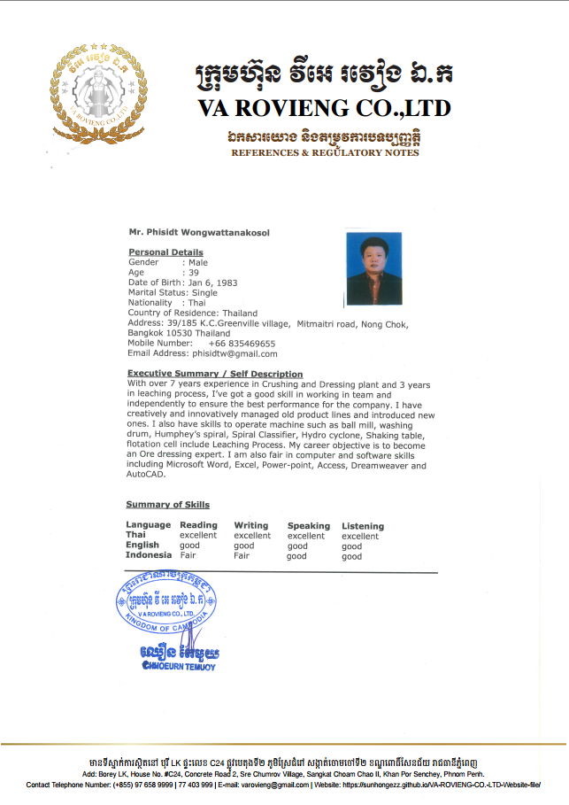
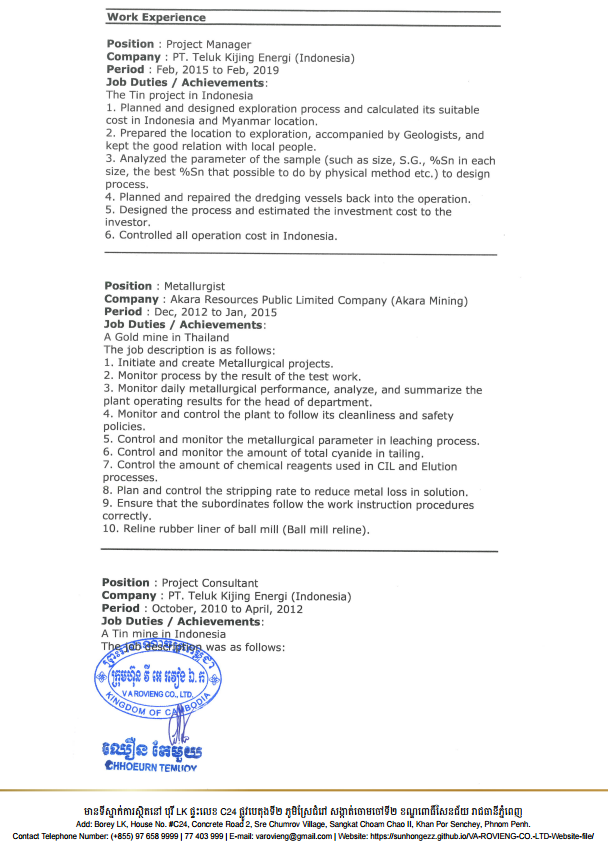
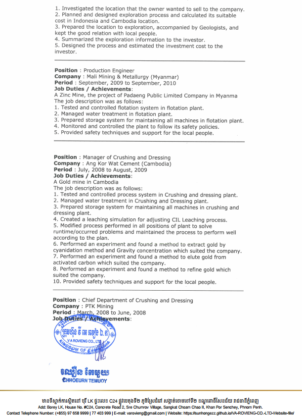
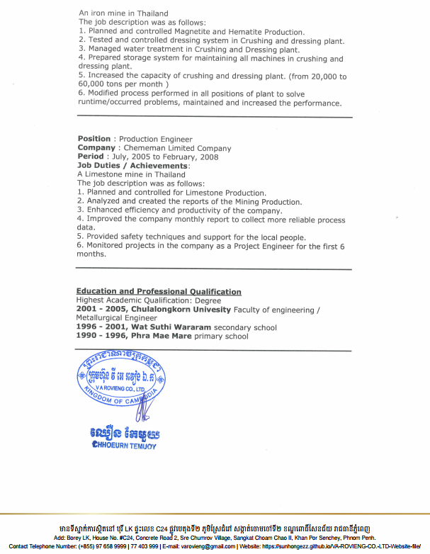
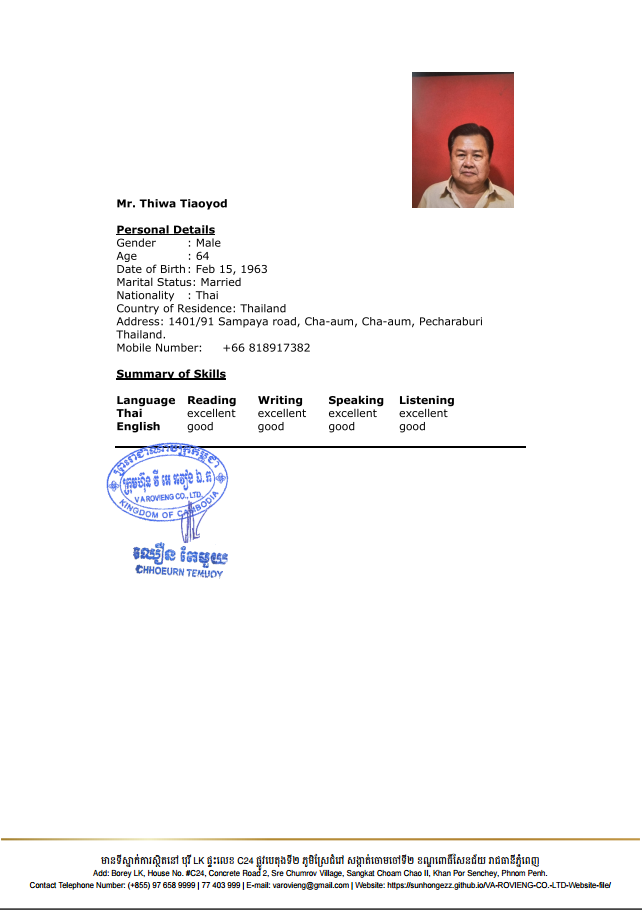
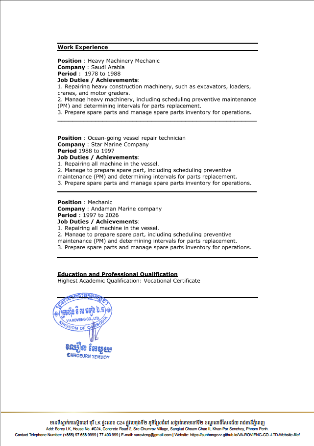

Engineer Profiles
Meet the professionals behind our engineering work. Browse each profile for a summary of their experience, technical strengths, and qualifications.
Mr. Phisidt Wongwattanakosol
The submitted résumé describes a metallurgical engineer with more than seven years of experience in crushing and dressing plants, as well as three years teaching process work. It highlights experience improving production lines, introducing processes, and working independently and with teams. The listed roles span mining and exploration projects in Thailand, Cambodia, Myanmar, and Indonesia.
Earlier roles include Production Engineer at Cheneman Limited Company (2005–2008), Chief of Crushing and Dressing at PTK Mining (2008), Manager of Crushing and Dressing at Ang Kor Wat Cement (2008–2009), Production Engineer at Mali Mining & Metallurgy (2009–2010), and Project Consultant at PT Teluk Kijing Energi (2010–2012). Later positions include Metallurgist at Akara Mining (2012–2015) and Project Manager at PT Teluk Kijing Energi (2015–2019), supporting exploration planning, site assessment, sample evaluation, process design, cost estimates, local coordination, and dredging-vessel operations.
The résumé lists experience with crushing and dressing, flotation, leaching, CIL and elution, water treatment, plant safety, and process improvement. Equipment includes ball mills, washing drums, Humphrey’s spirals, spiral classifiers, hydrocyclones, shaking tables, and flotation cells. It also lists a Metallurgical Engineering degree from Chulalongkorn University, computer skills including Microsoft Office and AutoCAD, and Thai, English, and Indonesian language skills.




Mr. Thiwa Tiaoyod
The submitted résumé identifies Mr. Thiwa Tiaoyod and describes a career focused on heavy construction machinery and marine mechanical maintenance. It lists a vocational certificate and Thai language skills rated excellent, with English rated good.
From 1978 to 1988, he worked as a Heavy Machinery Mechanic in Saudi Arabia, repairing excavators, loaders, cranes, and motor graders. The listed duties include planning preventive maintenance, scheduling replacement intervals, and managing spare-parts inventory. From 1988 to 1997, he worked as an ocean-going vessel repair technician with Star Marine Company, maintaining vessel machinery and preparing parts and maintenance schedules.
The résumé lists a Mechanic role at Andaman Marine Company from 1997 to 2026. Responsibilities include repairing vessel machinery, coordinating preventive maintenance and replacement intervals, and managing spare-parts inventory. Across these roles, the described experience emphasizes hands-on equipment repair, maintenance planning, and parts readiness for machinery and vessels.

